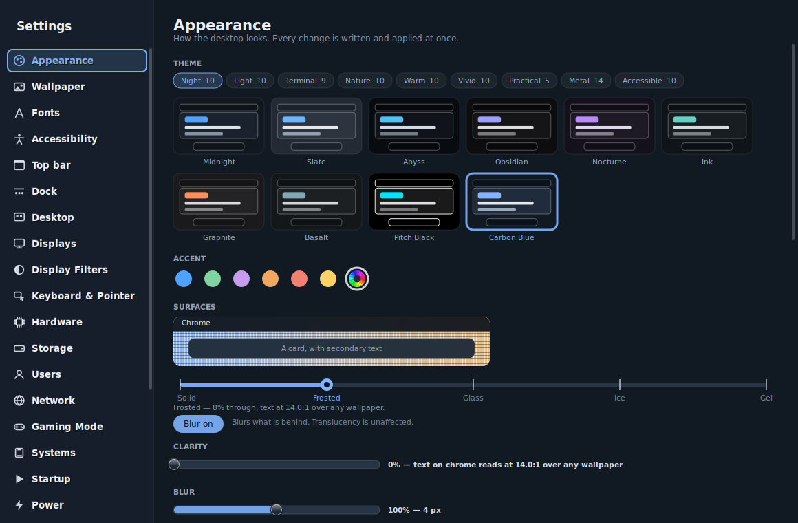

Its own starting point.
Configured runtimes and per-application state reduce reliance on a single shared setup. Support still depends on the application and runtime.
A Linux desktop built around capsules: applications paired with their runtimes, with access you can see and control.
Fresh captures from the current applications’ own drawing functions. Explore the real layouts, labels, controls and materials. These are native UI renders with controlled sample state—not a browser remake or proof of a running OS session.

Theme families, accent selection, surfaces, translucency and blur in the native Settings page.
Sample stateCarbon Blue; isolated demonstration preferences.
Drawn frompanel/src/capsule-settings.c
Pick a route, then select a step to inspect its native screen. These links navigate the gallery; they do not operate the OS.
A source-based inventory of the implemented surfaces and tools. “Implemented” means code exists here; it does not mean every route, device or application is verified on every image.
8 feature groups shown
Extracted from PAGE_NAME in capsule-settings.c, not the proposed navigation catalog.
Definitions are configuration, not a tested-application list. Some require separately licensed software or firmware.
Capture provenance, source fingerprints and fixture details: native capture record. Proposed Settings work is explicitly labeled above.
These browser interactions explain selected code paths. They do not run applications, enforce an OS sandbox, access your files, or reproduce every native control. The wallpaper is a web illustration.
Old software often needs a particular environment. New software often asks for more access than you expect. Capsule OS explores one place to manage both.
A capsule pairs an application with a configured runtime. The desktop aims to make launching feel ordinary while keeping the runtime, permissions, and diagnostics visible when you need them.
Explore the implementation notes ↗Configured runtimes and per-application state reduce reliance on a single shared setup. Support still depends on the application and runtime.
Folder, device, and network choices are exposed in Properties. The launcher uses grants when assembling the next application session.
Launch records and a graphical log viewer provide a route from “it didn’t open” to information you can investigate.
Named color roles connect windows, controls, and surfaces. Shared typography and theme-aware graphics give the desktop a consistent vocabulary.
Background, chrome, cards, text, and accents are separate roles.
Show what an application uses where you manage it.
Aim to make everyday tasks possible without a terminal. Gaps remain.
Reviewed against the working tree on 9 September 2026, based on commit 70085c4 plus local changes. Code presence is not proof of a working release.
The current layout guards hide an unusable search field, but the source still records a minimum-window-size problem at 300% text scale. This site does not establish native accessibility conformance.
Source note S4 ↗The installer resolves partitions using global Capsule partition labels. The latest ledger flags ambiguity when multiple disks have those labels. Real-disk installation remains unverified; this preview provides no installation or disk-writing action.
Source note S5 ↗The latest build notes describe disabling direct scanout for VMware as a blink mitigation. Confirmation in VMware is still needed. Recorded QEMU boot success does not establish VMware graphics or bare-metal reliability.
Source note S5 ↗The tree includes Windows, DOS, native Linux, and other runtime definitions. Their presence does not prove a particular application, device, game, or installer works. No compatibility score or performance benchmark is claimed here.
Source note S6 ↗The launcher now includes a cleared environment; the startup capsule array is now 256 entries, replacing the old 32-entry array. Older reports of inherited session variables and silently dropping the 33rd capsule should not be repeated as unchanged current bugs. This is source inspection, not a security audit.
Source note S7 ↗The deb-app runtime definition sets WebKit’s sandbox-disable environment flag. The outer capsule boundary is a separate mechanism; it is not a reason to describe this configuration as fully sandboxed or security-audited.
Source note S8 ↗The empty collection says “Install adds one from a file you already have,” but “Open Install” invokes the OS installer. The native capture preserves this wording; use Capper or Encapsulator for application imports. This site never invokes that native action.
Source note S9 ↗Showing all 7 notes.
The native gallery calls actual drawing code; the optional exercises illustrate concepts. The native capture record above documents the expanded inventory. This is a curated snapshot, not an exhaustive bug tracker. Local changes may not be committed, built, or present in an ISO.
Read the complete source map ↗shared/theme.c defines the exact Midnight, Paper, Carbon Blue, and Sea Glass color roles used in the demo. docs/DESIGN.md explains the design principles. Browser layout and wallpaper are illustrative.
panel/src/capsule-permissions.c, tools/capsule-run, and docs/manual/permissions.md describe saved grants and their use at launch. The demo models three switches and a successful relaunch, not real enforcement or all failure paths.
panel/src/capsule-logs.c includes “Only those lines” and log-export controls. tools/capsule-run writes launch records. All log entries on this page are invented demo data.
See the comment and guard around tab_has_search(a->tab) && page_bottom(a) > page_top(a) in panel/src/capsule-permissions.c. The native UI has not been reproduced in a VM for this review.
tools/capsule-install-run resolves /dev/disk/by-partlabel/capsule-*. capsule-ledger/NOTES.md, entry 135, and capsule-ledger/briefs/controller-home-and-imports.md record the duplicate-label risk, VMware mitigation, and limits of build 202609090239 testing. Earlier launch failures and console flashes have later fix records and are not listed as unchanged bugs here.
runtime-defs/ contains runtime definitions. In current source, tools/capsule-run includes --clearenv and compositor/src/capsule-wm.c declares pending_capsules[256]. Historical documentation still describes some earlier behavior.
runtime-defs/deb-app.json sets WEBKIT_DISABLE_SANDBOX_THIS_IS_DANGEROUS to 1. Ledger entry 133 explicitly leaves this exception open. This inspection does not evaluate the overall security of the OS.
panel/src/capsule-library.c displays “Install adds one from a file you already have” and registers HIT_INSTALL; its install helper invokes capsule-install. The current native empty-state capture shows the wording. The OS was not changed during this website task.
The repository identifies its own code as GPL-3.0-or-later. That license permits commercial use under its terms. The project’s non-commercial assembled-image policy concerns the particular third-party bundle; it is not an extra restriction on GPL code. Components retain their own licenses. Read the GPL license.
This site includes no OS image, application binaries, game media, ROMs, BIOS files, product keys, or third-party application artwork. Document contents and exercise logs are fictional. Native captures contain the existing harness’s example package, game, and device names; these are illustrative metadata, not included software or tested compatibility. Compatibility references do not imply endorsement by other projects or vendors. Any software or content used with the OS requires applicable rights and licenses; ownership alone does not settle every permitted use.
The demo uses no analytics, cookies, remote fonts, or account system. Demo choices live only in page memory and reset on reload. A hosting provider may separately keep request logs. This experimental preview is not a security guarantee, compatibility certification, or legal clearance of an OS release. Trademark clearance for the Capsule OS name has not been established by this work.
Basis: repository docs/LICENSING.md, GPLv3 terms, and U.S. Copyright Office guidance on digital copies. Legal notes are general information, not legal advice.